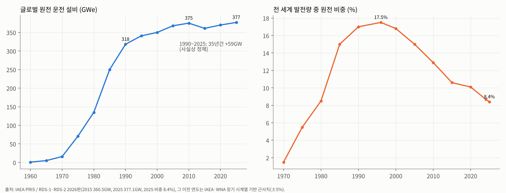
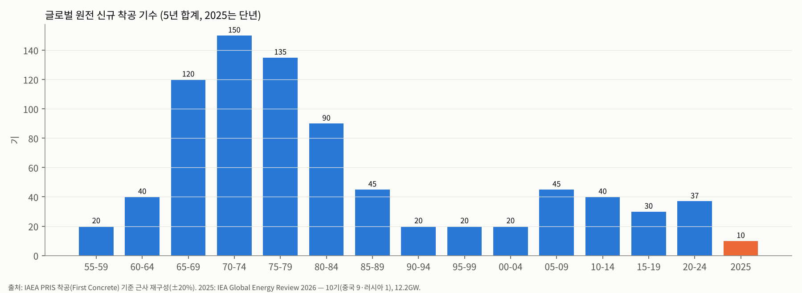
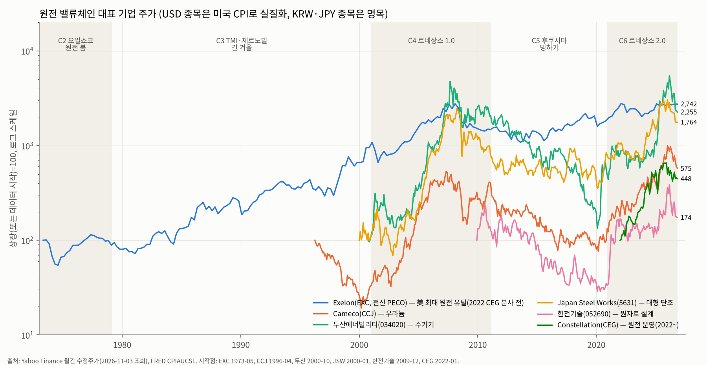
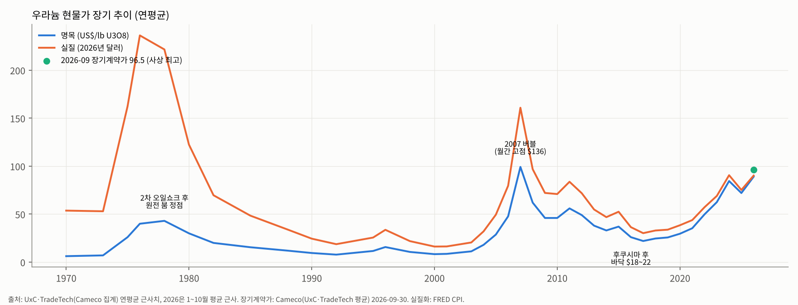
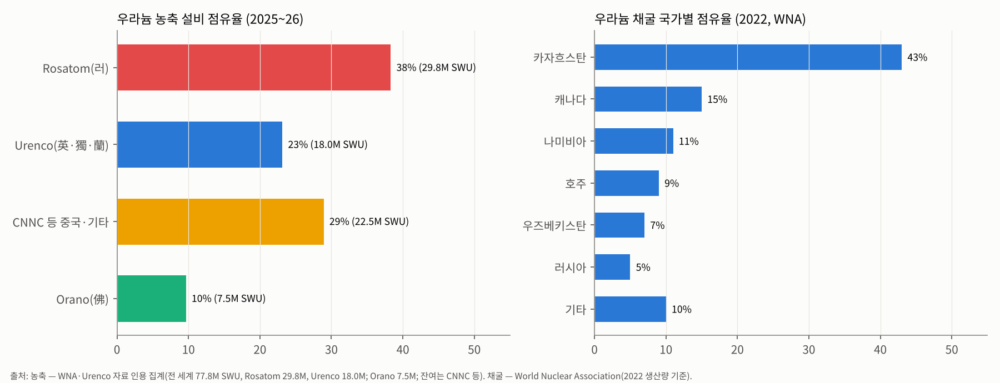

원전 산업 기초 분석
원전 산업 기초 분석 (Industry Basic — Nuclear Power)
본 문서는 셀사이드 init(데뷔) 자료 수준의 영구 reference 문서다. 원전 산업의 본질·역사·구조를 처음 접하는 사람이 한 번에 이해할 수 있도록 구성했다. 분기 실적·단기 수주 뉴스는 다루지 않는다(실적 분석·테마 분석 영역). 발전기기(가스터빈)·송변전 등 "전력 인프라" 공통 영역은
전력 인프라_산업기초.md를 참조. 이전 리포트 대비 Delta: 2026-03-24산업분석_원전SMR(구 형식)을 대체한다. 3월 대비 바뀐 사실은 문서 끝 "부록 A. 3월 리포트 대비 Delta"에 모았다.
Executive Summary (5줄 이내)
- 원전은 "짓는 데 10~15년, 돌리는 데 60~80년" 짜리 초장기 자본재 산업이다. 1942년 맨해튼 프로젝트의 군사기술이 1950년대 민수로 전환되며 탄생했고, 1970년대 오일쇼크 때 폭발했다가 TMI(1979)·체르노빌(1986)·후쿠시마(2011) 세 번의 사고로 30년 넘게 정체됐다 — 글로벌 설비는 1990년 318GW → 2025년 377GW로 35년간 +59GW에 그쳤고, 발전 비중은 1996년 17.5% → 2025년 8.4%로 반토막 났다(IAEA).
- 사이클의 정수 — "에너지 안보 위기가 사이클을 켜고, 사고와 비용 초과가 끈다." 주가 사이클은 15~25년 장주기 + 그 안의 3~5년 투기 사이클 구조. 우라늄 대표주 Cameco는 2000→2007 약 30배, 2007→2020 -85%, 2020→2026.1 약 16배. 두산에너빌리티는 2004→2007 약 27배, 2007→2020 -98%, 2020→2026.3 약 41배를 기록했다(Yahoo Finance 월말 종가).
- 2026년 현재 산업 위치(4+5 종합 결론): 카테고리 A(구조적 메가 병목) — 단, "수요 선언 vs 실착공"의 시차가 큰 A. 후쿠시마 이후 15년 구조조정으로 서방 공급망(농축·대형 단조·EPC·인력)이 극단적으로 얇아졌는데, 에너지 안보(러·우 전쟁·이란 전쟁)·AI 데이터센터 24/7 전력·탄소중립 3중 수요가 겹쳤다. 가격 신호는 이미 나왔다 — 우라늄 장기계약가 $96.5~99/lb 사상 최고(2026.9~10), 농축 SWU $200 수준(2018 저점 대비 약 5~6배).
- 밸류체인 병목 위치: 농축(러시아 Rosatom 약 38~43%, 미국 2028.1 수입 금지 waiver 종료) > 대형 단조·주기기(JSW·두산·중국 3강, 프레스 신설 7~10년) > 숙련 EPC·인력(미국은 30년 공백) > 우라늄 채굴(카자흐 43%). 원자로 설계사(Westinghouse·KHNP·EDF·Rosatom·CNNC)는 5사 과점이지만 '설계를 팔아도 지을 사람이 없는' 구조라 병목은 하부 공급망에 있다.
- 한국은 "서방에서 유일하게 공기·예산 내 완공 능력을 유지한 나라" — 주기기(두산에너빌리티, 직접성 높음), 설계(한전기술, 높음), EPC(현대건설·대우건설, 높음/중간), 운영·수출 총괄(한수원·한전). 2026년 한미 'Project Power'(1,200억달러, AP1000 6기+APR1400 2기)로 미국 본토 진입로가 열렸으나, 체코 두코바니 시공계약 결렬(2026.10.29)이 보여주듯 "수주 → 이익"으로 가는 계약 리스크(총액확정 vs 실비정산)가 산업의 핵심 변수로 부상했다.
1-pager 요약 표 (5단계 핵심 결론)
| 단계 | 핵심 결론 |
|---|---|
| 1. 역사 | 6 chunk: ① 1942–1973 탄생 — 군사기술 민수 전환, 미국 WH(PWR)·GE(BWR) 패권, "턴키 전쟁" ② 1973–1979 오일쇼크 원전 붐 — 프랑스 메스메르 계획, 미국 발주 정점, 우라늄 6배 ③ 1979–2000 TMI·체르노빌 긴 겨울 — 미국 발주 0·100기+ 취소, 프랑스·일본·한국 기술 자립, 운영 효율화(가동률 60→90%) ④ 2001–2011 르네상스 1.0 — Toshiba-WH, Areva, 우라늄 버블($136), 한국 UAE 수출 ⑤ 2011–2020 후쿠시마 빙하기 — 독일 탈원전, WH 파산(2017), Areva 해체, 한국 탈원전, 우라늄 $18 ⑥ 2021–2026 르네상스 2.0 — 에너지 안보·AI 전력·COP28 3배 선언, 미국 $80B WH 파트너십, 한미 Project Power |
| 2. 사이클 | 장주기(15~25년) 3회 확인: 1965–1979 상승→1979–2000 하락 / 2001–2007 상승→2007–2020 하락 / 2020–현재 상승. 상승기 진폭 +1,000~4,000%(고베타 주), 하락기 -85~98%. 장주기 안에 "투기 사이클"(2005–07, 2024–26) 내장 → 2026년 현재 장주기 상승 중 투기 사이클 조정(-40~60%) 국면 |
| 3. BM/밸류체인 | 5 layer: 연료(채굴→전환→농축→성형) → 원자로 설계·IP → 주기기(RPV·SG·터빈, 대형 단조) → EPC·시공 → 운영·O&M·PPA. 마진: 운영(규모 갖춘 미국 merchant 원전 EBITDA 30~40%) ≥ 농축(과점, 고마진) ≥ 채굴(가격 연동) > 설계·서비스 > 주기기(10~15%) > EPC(3~8%, 고위험). 가장 돈을 많이 잃은 곳 = 고정가 EPC(WH 2017 파산, Areva OL3) |
| 4. 공급 (1980 vs 2026) | 원자로 벤더: 1980 서방 약 10개사 → 2026 실질 5개 계열(WH·KHNP·EDF/Framatome·Rosatom·CNNC/CGN) + SMR 스타트업. 농축 CR3(Rosatom·Urenco·CNNC) 약 90%, 대형 단조 서방 접근 가능 3~4개 공장. 착공 기수: 1970년대 5년 합계 135~150기 → 2010s 30~40기 → 2025년 10기(9기 중국) |
| 5. 수요 | B2B(유틸리티·국가) 100% — 사실상 "국가가 고객". 수요 driver: 에너지 안보 > AI·전기화 > 탈탄소. 2025 운전 377GW → IAEA 2050 고성장 1,045GW / 2060 1,284GW(6년 연속 상향). 실제 착공은 중국 편중(건설 중 설비의 약 절반). 하이퍼스케일러 원전 계약 약 10GW(대부분 기존 원전 PPA·SMR 옵션) |
| 4+5 종합 | 카테고리 A (구조적 메가 병목) — 단, 병목이 "설비"가 아닌 "공급망(연료·단조·인력)"에 있고, 수요 확정이 정부 재정·금리에 민감한 "지연형 A". 2026년 주가 조정은 펀더멘털(장기계약가 사상 최고)과 디커플링된 금리·밸류에이션·계약 리스크 이슈 |
1단계. 역사 — 1942년부터 2026년까지
원전 산업의 모든 장면에는 두 개의 손이 있다. 에너지 안보 위기라는 '켜는 손', 그리고 사고와 비용 초과라는 '끄는 손'. 6개 chunk는 이 두 손이 번갈아 산업을 움직인 기록이다.


Chunk 1. 1942–1973 — 탄생: 폭탄에서 발전소로, 미국 PWR·BWR 패권
(a) 매크로 배경
- 2차대전 맨해튼 프로젝트(1942~) — 시카고 파일-1(CP-1, 1942.12)에서 인류 최초의 연쇄반응. 원자력은 출발부터 '국가 기술'이었다.
- 1953년 아이젠하워 UN 연설 "Atoms for Peace" — 냉전 하에서 원자력을 우방국에 민수용으로 '수출'해 소련 영향력을 견제하는 외교 전략. 한국·일본·서독·이탈리아 등의 원자력 프로그램이 모두 이 틀에서 시작.
- 전후 고도성장 + 값싼 석유 시대. 전력 수요가 매년 7%씩 늘던(10년마다 2배) 시기라 "전기는 너무 싸서 계량할 필요도 없을 것(too cheap to meter)"이라는 낙관(1954, 미 AEC 위원장 Lewis Strauss)이 지배.
(b) 패권자
- 미국: Westinghouse(가압경수로 PWR — 원래 해군 잠수함 노틸러스호용으로 개발), GE(비등경수로 BWR). 둘 다 해군 핵추진 프로그램(리코버 제독)의 기술 유산이다. B&W, Combustion Engineering이 2선.
- 영국(Calder Hall 1956, 세계 최초 상업 규모 원전·가스냉각로), 소련(Obninsk 1954, 세계 최초 전력망 연결), 프랑스(가스흑연로 → 1969년 미국 PWR로 전환 결정, Framatome가 WH 라이선스 획득), 캐나다(CANDU 중수로).
- 결과적으로 "경수로(LWR) = 미국 표준"이 세계 표준이 됐다. 오늘날 운전 원전의 약 85%가 PWR·BWR 계열이다.
(c) 산업 변화
- 1957 Shippingport(미국 최초 상업 원전, 60MW) — 사실상 해군 원자로의 육상판.
- 1963 GE가 Oyster Creek을 고정가 "턴키(Turnkey)"로 수주 — WH도 맞불. 1963~66년 두 회사가 약 12기를 손해 보며 턴키로 팔아 시장을 열었고(일종의 '로스리더' 전략), 이후 유틸리티들이 앞다퉈 발주하는 "Great Bandwagon Market"(1966~67)이 시작됐다.
- 비유: 테슬라가 초기에 차를 원가 이하로 팔아 시장을 연 것처럼, GE·WH는 원전을 손해 보고 팔아 표준을 선점했다. 단, 원전은 그 손실이 수억 달러 단위였다.
- 규모 경쟁: 1960년대 후반부터 단위 용량이 300MW → 1,000MW+로 3배 이상 커졌다. "클수록 싸다"(규모의 경제)는 가정이 이 시대의 신앙이었고, 이 신앙은 1970~80년대 비용 폭증으로 깨진다. (오늘날 SMR은 정확히 반대 가정 — "작게 많이 만들어 학습효과로 싸게" — 에서 출발한다.)
- 한국: 1958 원자력법 제정, 1959 원자력원 설립, 1971 고리 1호기 착공(WH 턴키, 1978 상업운전).
(d) 사이클 단계
- 산업 형성기 → 1966~73 1차 발주 붐. 미국 연간 발주가 1967년 31기, 1973년 41기(사상 최대)에 달함(미 EIA·NRC 집계 기준 근사).
(e) 대표 기업 주가
- 원전 순수 상장주는 없던 시대. WH·GE는 종합 전기기업으로 원전 비중이 작았다. 원전 비중이 큰 유틸리티(Commonwealth Edison, PECO 등)가 '성장 유틸리티'로 프리미엄을 받던 시기(1960년대 유틸리티 주가 PER 20배 내외).
(f) 규제 layer
- 1946 원자력법(AEC 설립, 정부 독점) → 1954 원자력법 개정(민간 원전 허용).
- 1957 Price-Anderson Act — 사고 배상책임 상한제. 보험이 안 되는 '꼬리 위험'을 국가가 떠안아줘야 민간이 진입할 수 있다는, 원전 산업의 구조적 특성을 보여주는 첫 사례.
- 1957 IAEA 설립(핵비확산·안전 국제 체제).
Chunk 2. 1973–1979 — 오일쇼크와 원전 붐: "에너지 안보가 켜는 손"
(a) 매크로 배경
- 1973 1차 오일쇼크 — 유가 4배(배럴 $3 → $12). 당시 세계 발전의 약 25%가 석유 화력이었다. 석유 없는 나라들에게 원전은 '선택'이 아니라 '생존'이 됨.
- 동시에 1970년대 스태그플레이션 — 고금리가 시작된다. 원전은 건설비가 총원가의 60~80%인 '금리 민감 자산'이라 이 고금리가 Chunk 3의 비용 폭증 씨앗이 된다.
(b) 패권자
- 프랑스: 1974 메스메르 계획(Messmer Plan) — "석유는 없지만 아이디어는 있다." 표준화된 900MW·1,300MW PWR을 15년간 56기 건설. 비유하면 '같은 설계의 아파트를 같은 시공팀이 반복해서 짓는' 방식이라 비용이 낮게 유지됐다. EDF(국영 유틸)+Framatome(설계·주기기)+Alsthom(터빈) 수직 체계. 결과: 원전 비중 70%+ 달성.
- 일본: 석유 의존 75% → 원전 국책화. Toshiba·Hitachi(GE BWR 라이선스), MHI(WH PWR 라이선스)가 국산화.
- 미국: 발주는 1973년 정점이었으나, 1974년부터 취소가 시작됐다(수요 증가율 둔화 + 고금리).
(c) 산업 변화
- 우라늄 가격 폭등: 1973년 약 $7/lb → 1976~78년 $40+(연평균, 약 6배).
- Westinghouse 우라늄 디폴트(1975) — WH는 원자로를 팔면서 "연료(우라늄)도 고정가로 공급하겠다"고 약속해 둔 물량이 약 6,500만 lb에 달했는데, 가격이 5~6배 뛰자 공급 계약 이행 불가를 선언했다. 유틸리티 27곳이 소송. 교훈: 원전 공급자가 원자재·공사 가격 리스크를 고정가로 떠안으면 회사가 흔들린다 — 이 교훈은 2017년 WH 파산, 2026년 체코 시공계약 결렬까지 반복된다.
- 상업 원전의 '대형화·표준화 실패': 미국은 유틸리티마다 다른 설계, 다른 시공사 → 같은 노형도 모두 'FOAK(첫 호기)'처럼 지어졌다.
(d) 사이클 단계
- 1차 원전 슈퍼사이클 절정. 1970~79년 세계 착공 약 285기(5년 합계 150·135기, 근사). 오늘날 운전 중인 원전의 다수가 이 시기 착공분.
(e) 대표 기업 주가
- 미국 유틸리티 주가는 고금리·인플레로 1973~74년 폭락(PECO 실질 주가 약 -45%, 차트 참조). "원전 발주 붐 ≠ 원전 관련주 상승"의 첫 사례 — 고금리가 할인율을 올려 장기자산 가치를 깎았기 때문. 2026년 금리 상승기의 원전주 조정과 같은 메커니즘이다.
(f) 규제 layer
- 1974 Energy Reorganization Act → 1975 NRC 출범(진흥 기능과 규제 기능 분리). 규제기관이 독립하면서 인허가가 길어지고 설계 변경 요구가 늘었다.
- 1974 인도 핵실험 → 1978 미국 핵비확산법(NNPA), 재처리 금지(카터 행정부, 1977). 미국은 이후 상업용 사용후핵연료 재처리를 하지 않는다.
Chunk 3. 1979–2000 — TMI·체르노빌, 21년의 긴 겨울 (그리고 조용한 운영 혁명)
(a) 매크로 배경
- 1979.3 TMI-2(스리마일섬) 부분 노심용융 — 사망자 0명이었지만 영화 '차이나 신드롬'(사고 12일 전 개봉)과 겹쳐 대중의 공포가 폭발.
- 1979 2차 오일쇼크 → 1980~81 폴 볼커의 20% 금리. 건설 중 원전의 이자비용이 폭증.
- 1986.4 체르노빌 — 유럽 전역 방사능 낙진. 이탈리아(1987 국민투표 탈원전), 스웨덴·독일·스페인 신규 중단.
- 1980년대 중반 이후 유가 하락(1986 역오일쇼크) + 가스 복합화력의 등장 → '켜는 손'이 사라짐.
(b) 패권자
- 프랑스(EDF·Framatome) — 유일하게 표준화 건설을 끝까지 밀어붙여 58기 함대 완성.
- 일본(도시바·히타치·MHI) — 1990년대 ABWR(가시와자키가리와 6·7호기, 1996~97) 등 세계 최초 3세대 원전 상용화.
- 한국 — 이 시기의 숨은 승자. 1987 영광 3·4호기에서 미국 CE(Combustion Engineering)와 기술전수 조건 계약 → 한국표준형원전(KSNP, 후일 OPR1000) 개발 → 1990~2000년대 동일 노형 반복 건설로 '프랑스 모델'을 재현. 이 과정에서 한국중공업(현 두산에너빌리티)이 주기기 일괄 생산 체계를, 한국전력기술이 설계 역량을 갖췄다. APR1400(2000년대 개발)의 뿌리가 CE 기술이라는 점이 2022~2025년 WH와의 지식재산권 분쟁의 원인이 된다.
- 캐나다 Cameco(1988 설립, 사스캐처원 국영 2사 합병) — 고품위 우라늄(McArthur River) 장악.
(c) 산업 변화
- 미국 신규 발주 0 — 1978년 이후 30년간 신규 발주가 사실상 없었고, 1974~1985년 사이 100기 이상이 취소됐다.
- WPPSS 디폴트(1983) — 워싱턴주 공공전력 원전 5기 프로젝트가 비용 폭증으로 $2.25B 지방채 부도. 당시 미국 지방채 사상 최대 부도로, 원전의 별명이 "Whoops"가 됐다.
- 비용 폭증: 미국 원전 건설단가가 1970년대 초 대비 1980년대 말 실질 3~5배 상승(규제 강화로 인한 설계 변경·공기 지연·이자비용). 공기가 5년 → 10~12년으로 늘었다.
- 조용한 혁명 — 운영 효율화: 신규 건설은 멈췄지만, 미국 원전 평균 가동률이 1980년대 약 60% → 2000년 약 90%로 뛰었다(정비 기간 단축, INPO 설립 후 운영 표준화). 새 원전 30기를 지은 효과를 기존 함대에서 뽑아낸 셈. 1990년대 후반 전력 자유화로 원전 자산이 헐값에 거래되며, 운영 전문 회사로의 집약이 시작 — 2000년 Unicom(ComEd)+PECO 합병으로 Exelon 탄생(미국 최대 원전 함대, 후일 2022년 Constellation으로 분사).
- 공급자 구조조정: 1999 영국 BNFL이 WH 원전사업 인수, 2000 CE 원전사업도 BNFL로 흡수. 2001 Framatome+Siemens 원전 → Areva 출범.
(d) 사이클 단계
- 장기 침체·구조조정. 다만 1980년대 중반까지는 1970년대 착공분의 완공이 이어져 설비는 1990년 318GW까지 늘었다(이후 정체). 세계 원전 발전 비중 정점은 1996년 17.5%.
(e) 대표 기업 주가
- 우라늄 가격: 1978 연평균 $43 → 2000년 $8(-80%, 실질 -95%). 우라늄 광산의 장기 빙하기.
- Cameco: 1996년 미국 상장 이후 2000년 3월까지 약 -80%.
- 미국 원전 유틸리티(PECO 등): 1980년대 고금리기 횡보 후 1990년대 운영 효율화·자유화로 재평가.
(f) 규제 layer
- TMI 이후 NRC 규제 대폭 강화(운전 중 원전 백피팅, 비상계획 요건).
- 1989 NRC Part 52(설계인증·건설운영 통합허가 COL) 도입 — "인허가를 한 번에" 하자는 개혁. 실제 첫 적용은 2010년대 Vogtle 3·4.
- 1987 미국 Yucca Mountain 단일 처분장 지정 → 정치적으로 표류(2010 사실상 중단). 고준위 폐기물 처분은 오늘날까지 미해결.
Chunk 4. 2001–2011 — 르네상스 1.0: 우라늄 버블과 서방 벤더의 확장
(a) 매크로 배경
- 교토의정서(1997 채택, 2005 발효) — 탄소 감축 압력.
- 2000년대 원자재 슈퍼사이클 — 중국 고성장, 유가 $147(2008.7), 미국 천연가스가 $13/MMBtu까지 급등. 다시 '켜는 손'.
- 2008 글로벌 금융위기가 착공 붐의 자금줄을 끊음.
(b) 패권자
- Areva(프랑스) — 우라늄 채굴부터 원자로·재처리까지 '원스톱' 수직계열화. EPR(1,600MW) 판매.
- Toshiba-Westinghouse — 2006 Toshiba가 BNFL로부터 WH를 약 $5.4B에 인수(시장 예상의 2배 이상). AP1000(피동안전 3세대+) 판매.
- Rosatom(2007 재편) — 러시아 국영 원자력 독점체. '건설+연료+금융+폐연료 회수' 패키지로 신흥국 공략.
- 한국 — 2009.12 UAE 바라카 4기 수주(약 $20B), 프랑스·미국·일본 컨소시엄을 제치고 따낸 첫 수출.
- 중국 — 해외 3세대 노형 도입(Sanmen AP1000 2009 착공, Taishan EPR) 후 자체 노형(Hualong One)으로.
(c) 산업 변화
- 착공 반등: 2005~2009 약 45기, 2010년 단년 16기(대부분 중국).
- FOAK 비용 초과의 반복: 핀란드 Olkiluoto 3(EPR, 2005 착공, 계약 약 €3B, 2009 완공 목표) → 2023년에야 상업운전, 총비용 약 €11B. 프랑스 Flamanville 3도 비슷한 경로. "수십 년 쉬다 다시 지으면 공급망·인력이 없어 첫 호기는 반드시 비싸진다"는 법칙이 확인됨.
- 대형 단조 병목 첫 부각: 2000년대 후반 RPV용 초대형 단조품을 만들 수 있는 곳이 JSW(일본) 사실상 독점이라 '단조 슬롯 예약'이 원전 발주의 선결 조건이 됨. JSW는 2008~2011년 약 ¥80B를 들여 연 RPV 생산능력을 4세트 → 12세트로 3배 확대했고(WNA), 두산중공업도 대형 단조 설비 투자.
- 우라늄: 2006년 Cigar Lake 광산 침수 + 금융투자 수요 → 2007.6 월간 고점 $136/lb. 1980년대 이후 처음으로 '공급 부족' 서사가 시장을 지배했다.
(d) 사이클 단계
- 2차 원전 사이클(르네상스 1.0) 상승기. 그러나 실제 서방 착공은 미미했고(미국 Vogtle 3·4, VC Summer 2·3 단 4기, 2013 착공) '말의 르네상스'에 그쳤다는 평가.
(e) 대표 기업 주가 (월말 종가, Yahoo Finance)
- Cameco: 2000.3 $1.73 → 2007.5 $51.97(약 30배).
- 두산중공업(현 두산에너빌리티): 2004.5 4,884원 → 2007.9 130,221원(수정주가, 약 27배) — 원전 기자재 + 해수담수화 + 중국 기계 수요 복합.
- JSW: 2004.9 745엔 → 2008.4 10,950엔(수정주가, 약 15배).
- 한전기술: 2009.12 상장 → 2010.8 141,000원(UAE 수주 효과).
(f) 규제 layer
- 미국 EPAct 2005 — 신규 원전에 대출보증·생산세액공제(PTC $18/MWh, 6GW 한도)·규제지연 보험.
- NRC AP1000 설계인증(2006·2011 개정).
- 2008 인도-미국 원자력 협정(NSG 예외) → 인도 시장 개방.
Chunk 5. 2011–2020 — 후쿠시마 빙하기: "끄는 손"과 서방 공급망의 붕괴
(a) 매크로 배경
- 2011.3.11 후쿠시마 제1원전 사고 — 지진·쓰나미로 전원 상실, 3기 노심용융.
- 셰일 혁명 — 미국 천연가스 가격 $2~4/MMBtu로 폭락, 원전의 경제성을 잠식.
- 재생에너지 비용 급락(태양광 모듈 2010~2020 약 -80~90%).
- 저금리(ZIRP) 시대였지만, 원전은 '수요 없음'이라 저금리의 혜택을 받지 못함.
(b) 패권자
- Rosatom — 서방이 멈춘 사이 해외 신규 건설 수주의 과반을 차지(튀르키예 아쿠유, 이집트 엘다바, 방글라데시, 헝가리 팍스 II 등). 국가 금융을 붙인 패키지 수출.
- CNNC·CGN(중국) — 내수 연 5~10기 착공을 지속하며 Hualong One 자립. 중국 설비가 이 시기 약 11GW → 50GW로 증가.
- 한국 — 신고리·신한울 APR1400 연속 건설로 공급망 유지. 그러나 2017 문재인 정부 탈원전 정책(신규 6기 백지화, 월성 1호기 조기폐쇄) → 국내 생태계 위축, 두산중공업 2020년 채권단 관리(약 3조원 긴급 지원).
(c) 산업 변화
- 독일: 2011 즉시 8기 폐쇄, 2022년까지 전면 탈원전 결정(실제 마지막 3기 2023.4 폐쇄). 일본: 54기 전기 정지, 2015년부터 신규제기준 하 순차 재가동.
- 미국 merchant 원전 조기 폐쇄: 싼 셰일가스·전력 도매가 하락으로 Vermont Yankee(2014), Pilgrim(2019), Indian Point(2021), Palisades(2022) 등 경제성 폐쇄. 일리노이·뉴욕 등은 ZEC(무탄소 크레딧) 보조금으로 연명시킴(2016~).
- Westinghouse 파산(2017.3, Chapter 11) — Vogtle 3·4, VC Summer 2·3를 사실상 고정가로 수주했다가 비용이 폭증. 모회사 Toshiba는 약 $6B+ 손실로 존립 위기. VC Summer 2·3은 약 $9B를 쓰고 2017년 공사 중단. Vogtle 3·4는 7년 지연, 총비용 약 $35B로 2023·2024 완공(최초 추정의 2배+). 2018년 Brookfield가 WH를 약 $4.6B에 인수(이후 Cameco 49% 참여, 2023).
- Areva 해체(2016~2018) — OL3 손실 누적 → 원자로 사업은 EDF 산하 Framatome로, 연료주기 사업은 Orano로 분리.
- 우라늄 공급 감산: Cameco McArthur River 가동 중단(2018~2022), Kazatomprom 계획 대비 20% 감산(2018~). 생산자들이 '버티기'에 들어간 시기.
- SMR 개념 부상: NuScale(2007 설립, 2020 NRC 설계승인 — 첫 SMR 설계인증), TerraPower(빌 게이츠, 2008).
(d) 사이클 단계
- 장기 하락·구조조정 완성기. 서방 원전 공급망의 플레이어 수가 이 시기 극단적으로 줄었다 — 이것이 Chunk 6 병목의 직접 원인이다.
(e) 대표 기업 주가
- Cameco: 2011.1 $41.5 → 2020.3 $7.64(-82%).
- 두산중공업: 2010.2 71,720원(수정) → 2020.2 3,072원(-96%).
- JSW: 2011.1 4,260엔 → 2020.2 1,308엔(-69%).
- 한전기술: 2012.1 103,000원 → 2020.5 15,000원(-85%).
- 우라늄 현물: 2016~2017년 $18~22(사상 최저권, 실질 기준 1990년대 수준).
(f) 규제 layer
- 후쿠시마 이후 전 세계 안전규제 강화(외부 전원 상실·수소 폭발 대비 백피팅) → 운영비·재가동 비용 상승.
- 독일 원자력법 개정(2011), 일본 원자력규제위원회 신설(2012).
- 한국: 2017 에너지전환 로드맵(탈원전), 2018 원자력안전위원회 체계 강화.
- EU: 원전을 녹색분류(Taxonomy)에서 배제하는 논쟁 지속.
Chunk 6. 2021–2026 — 르네상스 2.0: 에너지 안보 × AI 전력 × 탄소중립
(a) 매크로 배경
- 2022 러·우 전쟁 — 유럽 천연가스 가격 10배 폭등, 에너지 안보가 1973년 이후 가장 강하게 부활. 서방이 러시아 핵연료 의존도(농축 약 40%)를 처음으로 '안보 리스크'로 인식.
- AI 데이터센터 전력 수요 — 2023년 이후 미국 전력 수요가 20년 정체를 깨고 증가 전환. 하이퍼스케일러가 '24/7 무탄소 전원'을 찾으며 원전이 '기후 자산'에서 'AI 인프라 자산'으로 재정의됨.
- 2026 이란 전쟁 — 호르무즈 리스크로 에너지 안보 논리가 재점화(2026.3 이전 리포트 작성 배경).
- 고금리: 2026년 9월 미국 CPI 3.7%, 10년물 약 5.3%(2026.10, wisevoter 인용) — 원전은 금리 민감 자산이라 주가에 역풍.
(b) 패권자
- 미국 정부가 다시 '구매자이자 투자자'로 등판 — Westinghouse(Brookfield 51%·Cameco 49%)와 2025.10 최소 $80B 전략 파트너십(정부는 $17.5B 초과 수익의 20% 참여권, 상장 시 지분 요구권).
- 운영사(Constellation·Vistra·Talen) — 기존 원전이 AI 전력 PPA로 재평가된 최대 수혜자.
- 연료주기: Cameco·Kazatomprom(채굴), Urenco·Orano·Centrus(농축 — 탈러시아 수혜).
- 중국 — 2022~2026년 매년 10기 이상 승인(누적 49기, 약 1조 위안), 건설 중 설비의 약 절반 보유. 2030년 110GW 목표.
- 한국 — 윤석열 정부(2022~) '원전 생태계 복원', 이재명 정부(2025~)도 2026.1 신규 대형 2기 계획대로 추진 결정(2037~38 준공 목표, 2026.6 영덕 부지 선정; SMR 1기 기장). 해외는 체코·미국.
(c) 산업 변화
- COP28(2023.12) — 22개국 '2050년 원전 3배' 선언(이후 30개국+ 확대). 2024 세계은행·ADB의 원전 금융 금지 해제 논의.
- 하이퍼스케일러 계약 러시: MS–Constellation TMI-1 재가동 20년 PPA(835MW, 2024.9), Amazon–Talen Susquehanna(960MW, 2024), Google–Kairos(500MW, 2024.10), Amazon–X-energy(최대 5GW, 2024.10), Meta 최대 6.6GW(Vistra·TerraPower·Oklo, 2026.1.9). 공개 계약 누적 약 9.8GW(13개 프로젝트, 2026.5, Presenc 집계) — 대부분 기존 원전 PPA 또는 2030년대 SMR 옵션이다.
- 재가동(Restart)이라는 새 카테고리: Palisades(미국 최초 폐쇄 원전 재가동, 2026.8 말 연료장전 개시), TMI-1(Crane, 2027 목표), Duane Arnold(검토). 일본 가시와자키가리와 6호기 재가동(2026.1~2, 도쿄전력의 후쿠시마 이후 첫 재가동).
- 미국 정책 대전환: 2025.5.23 행정명령 4건 — 2050년 원전 400GW(현재 약 100GW의 4배), NRC 신규 인허가 18개월 상한, DOE 시험로 파일럿(2026.7.4 임계 목표). 2026.6 DOE AP1000 장납기 기자재용 $17.5B 조건부 대출 약정(5개 사이트 × 2기 = 10기). 2026.3 TerraPower Natrium 건설허가, 2026.9.29 TVA Clinch River BWRX-300 건설허가(미국 최초 BWRX-300, NRC 14개월 심사).
- 한·미 원전 협력 구조 변화: 2025.1 한전·한수원–WH 지재권 분쟁 합의(SA, 해외 수출 1기당 1조원+ 기술료 부담 + 시장 분할) → 2026.9~10 '한미 원전 프레임워크(Project Power)' — 대미투자펀드 중 최대 1,200억달러로 미국에 AP1000 6기 + APR1400 2기 건설, SA 개정, 한전·한수원의 WH 소수지분(5~10%) 인수 추진.
- 체코 두코바니: 2024.7 우선협상 → 2025.6 주계약(EDUⅡ, 약 26~27조원, APR1000 2기) → 2026.10.29 한수원–대우건설·두산 컨소시엄 시공계약 협상 결렬(총액확정 vs 물량정산, 이견 1조원+). 주기기 공급계약(두산)은 유지, 2027.7 신규 시공사 선정 목표.
- 연료: 미국 러시아산 농축우라늄 수입금지법(2024.8 발효, waiver 2028.1.1 종료). 2025년에도 미국 SWU 구매의 26%가 러시아산(EIA 2025 보고서). DOE $2.7B 농축 재건(2026.1, Centrus·General Matter·Orano 각 $900M).
(d) 사이클 단계
- 3차 장주기 상승기(2020~). 단, 2026년 2분기 이후 장주기 상승 중 투기 사이클 조정 — 원전·우라늄 관련주가 2026년 1~3월 고점 대비 -40~60% 하락. 반면 펀더멘털 가격지표(우라늄 장기계약가·SWU)는 사상 최고권 유지. 2007년(가격과 주가 동반 붕괴)과 다른 점: 이번에는 주가만 빠지고 계약가격은 오르고 있다.
(e) 대표 기업 주가 (월말 종가, Yahoo Finance, 2026-11-03 조회)
| 기업 | 바닥 | 고점 | 상승배수 | 현재(2026.11) | 고점 대비 |
|---|---|---|---|---|---|
| Cameco(CCJ) | 2020.3 $7.64 | 2026.1 $123.4 | 16.2x | $73.4 | -41% |
| 두산에너빌리티 | 2020.2 3,072원 | 2026.3 127,100원 | 41.4x | 52,200원 | -59% (장중 고점 139,200원 대비 -62%, 부산일보) |
| JSW | 2020.2 ¥1,308 | 2026.1 ¥10,220 | 7.8x | ¥5,855 | -43% |
| 한전기술 | 2020.5 15,000원 | 2026.3 188,600원 | 12.6x | 84,500원 | -55% |
| Constellation(CEG) | 2022.2 $43.9 | 2025.10 $389 | 8.9x | $257 | -34% |
| Oklo(OKLO) | — | 2025.10 $163 | — | $23.5 | -86% |
| NuScale(SMR) | — | 2025.7 $51.7 | — | $5.35 | -90% |
- 조정 원인(팩트): ① 금리 재상승(2026.9 CPI 3.7% → 연준 재긴축 우려, 10년물 약 5.3%) ② 무매출 SMR주의 대규모 유상증자(Oklo 2026 상반기 ATM $1.9B + 9월 $1B 추가 프로그램) ③ 체코 시공계약 결렬(2026.10.29, 두산 이틀간 -13.5%) ④ 2025~26 상승분의 밸류에이션 부담.
(f) 규제 layer
- 미국: IRA(2022) 45U(기존 원전 PTC)·45Y/48E(신규 무탄소 세액공제, 원전 2030년대까지 유지), ADVANCE Act(2024, NRC 심사 효율화), 2025 행정명령 4건, 2026 NRC AP1000 설계인증 갱신(2026.10, Vogtle-4를 표준 참조 플랜트로).
- EU: 2022 Taxonomy에 원전 포함(조건부 녹색).
- 한국: 2026 신규 원전 2기 확정, 12차 전기본(2026~2040) 수립 중, 3차 고준위 방폐물 기본계획 초안(2026.11 — 기존 원전 저장시설 2030년부터 포화).
- 러시아 제재: 미국 수입금지(2024~2040), 영국 수입금지(2026.5).
2단계. 주가 사이클 — 정량 framework
통합 주가 차트 (1973~2026, USD 종목 인플레 조정·로그 스케일)

해석 가이드: 각 선은 데이터 시작점을 100으로 맞춘 누적 지수(로그). 기울기가 같으면 같은 수익률이다. Exelon(전신 PECO)은 2022년 Constellation 분사 이후 원전 노출이 없으므로 2022년 이후 구간은 참고용.
우라늄 가격 장기 추이 (1970~2026)

사이클 식별 — 3개의 장주기 + 2개의 투기 사이클
| 사이클 | 시작(바닥) | 정점 | 다음 바닥 | 길이(상승/하락) | 상승 진폭 | 하락 진폭 | 트리거(상승 → 하락) |
|---|---|---|---|---|---|---|---|
| 장주기 1 | 1965 | 1978 (우라늄 실질 $230+) | 2000 | 13년 / 22년 | 우라늄 실질 약 4배 | 우라늄 실질 -93% | 오일쇼크·발주 붐 → TMI·체르노빌·고금리·비용 폭증 |
| 장주기 2 | 2000.3 | 2007.5~2008.4 | 2020.2~3 | 7년 / 12년 | CCJ 30x, 두산 27x, JSW 15x | CCJ -85%, 두산 -98%, JSW -88% | 원자재 슈퍼사이클·르네상스 1.0 → GFC·후쿠시마·셰일·WH 파산 |
| 장주기 3 | 2020.2~3 | 2026.1~3 (진행 중) | — | 6년+ / — | CCJ 16x, 두산 41x, 한전기술 13x, JSW 8x | 현재 -41~-59% (조정) | 에너지 안보·AI 전력·COP28 → (?) |
| 투기 사이클 A | 2005 | 2007.6 우라늄 $136 | 2008 말 | 2년 / 1.5년 | 우라늄 현물 약 5배 | -55% | Cigar Lake 침수·금융 수요 → GFC |
| 투기 사이클 B | 2024 | 2025.10~2026.3 | 진행 중 | 2년 / — | OKLO·SMR 10x+ | OKLO -86%, SMR -90% | AI 전력·행정명령 → 금리·증자·무매출 |
사이클 패턴 framework — 정량 규칙
길이
- 장주기(산업 사이클) 상승 6~13년 / 하락 12~22년. 하락이 상승보다 길다 — 원전은 '짓는 결정'보다 '안 짓는 결정'이 더 오래 지속되기 때문(한 번 무너진 공급망·인력을 복원하는 데 10년+).
- 장주기 안에 2~3년짜리 투기 사이클이 내장된다. 투기 사이클은 '가장 먼 미래를 파는 종목'(2007 우라늄 주니어 광산, 2025 SMR 스타트업)에서 가장 격렬하다.
진폭
- 상승기: 대형 주기기·연료 대표주 +700~4,000%(8~41배). 하락기: -80~98%. 일반 산업재(전력 인프라 장주기 상승 3~10배)보다 진폭이 크다 — 수요가 '국가의 결정' 하나에 0과 1 사이를 오가는 binary 성격 때문.
- 투기 사이클 조정: 2007~08 우라늄 현물 -55%, 2026 원전주 -40~60%, SMR주 -85~90%.
구조조정 트리거 (하락 전환 조건 — 역사적으로 3가지 중 2개 이상 동시 발생)
- 안전사고(TMI·체르노빌·후쿠시마) — 여론·규제 비용 동시 충격.
- 경쟁 전원 가격 급락(1986 역오일쇼크, 2010s 셰일가스·재생E) — '켜는 손'이 사라짐.
- 금리 급등 + FOAK 비용 초과(1979~82 볼커, 2017 WH 파산) — 원전은 건설비가 총원가의 60~80%인 금리 민감 자산.
2026년 점검: ① 사고 — 없음 ② 경쟁 전원 급락 — 없음(가스터빈은 오히려 수급 쇼티지,
전력 인프라_산업기초.md참조) ③ 금리 급등 — 있음(10년물 5%대), FOAK 비용 리스크 — 잠재(체코 시공비 분쟁이 그 전조). → 3개 중 1~1.5개: 장주기 하락 전환 조건은 아직 미충족, 투기 사이클 조정으로 판단 [전망].
사이클 transition 시점의 선행 지표
- 우라늄 장기계약가와 주가의 괴리: 2007년엔 현물·장기·주가가 동반 하락 → 장주기 하락. 2026년엔 장기계약가 사상 최고($96.5~99) vs 주가 -40% → 투기 조정 패턴.
- 실착공(First Concrete) 기수: 선언·MOU가 아니라 착공이 늘어야 장주기 상승이 이익으로 이어진다. 서방(중국 제외) 연간 착공이 5기 이상으로 늘어나는지가 핵심 확인 지표.
1단계 chunk와의 매핑 표
| Chunk | 기간 | 주가 사이클 위치 | 일치 여부 |
|---|---|---|---|
| C1 탄생 | 1942–1973 | 산업 형성, 상장 순수주 부재 | — |
| C2 오일쇼크 붐 | 1973–1979 | 장주기 1 상승 후반(우라늄 정점), 단 유틸리티 주가는 고금리로 하락 | ✓ (산업↑·주가 혼조) |
| C3 긴 겨울 | 1979–2000 | 장주기 1 하락(22년) | ✓ |
| C4 르네상스 1.0 | 2001–2011 | 장주기 2 상승(+투기 사이클 A) → 2008 GFC 하락 시작 | ✓ |
| C5 후쿠시마 빙하기 | 2011–2020 | 장주기 2 하락 후반·바닥 | ✓ |
| C6 르네상스 2.0 | 2021–2026 | 장주기 3 상승 + 투기 사이클 B 조정 중 | ✓ |
→ chunk 경계(1979·2000/01·2011·2020)가 사이클 변곡점과 정확히 일치. 원전은 '사건'이 사이클을 끊는 산업이다.
3단계. 비즈니스 구조 + 밸류체인
5 레이어 밸류체인 매핑
[업스트림: 핵연료 주기]
우라늄 채굴(U3O8) ─→ 전환(UF6) ─→ 농축(SWU) ─→ 성형가공(연료집합체)
Kazatomprom·Cameco Cameco·Orano Rosatom·Urenco· WH·Framatome·
Orano·CGN·Uranium1 ConverDyn· CNNC·Orano· KEPCO NF·GNF·TVEL
Rosatom Centrus(HALEU)
│
[미드스트림 1: 원자로 설계·IP] ▼
WH(AP1000/AP300)·KHNP+한전기술(APR1400/APR1000/i-SMR)·EDF/Framatome(EPR)·
Rosatom(VVER)·CNNC/CGN(Hualong One)·GE Vernova Hitachi(BWRX-300)·
SMR 스타트업(NuScale·TerraPower·X-energy·Oklo·Kairos·Holtec)
│
[미드스트림 2: 주기기·기자재] ▼
대형 단조(JSW·두산·CFHI·Taewoong·OMZ) → RPV·증기발생기(SG)·원자로냉각재펌프·터빈발전기
(두산·BWXT·Framatome·MHI·Curtiss-Wright·GE Vernova·Arabelle) / 보조기기·계측(비에이치아이·우진·우리기술 등)
│
[다운스트림 1: EPC·시공] ▼
Bechtel·Fluor·현대건설·대우건설·삼성물산·Rosatom(ASE)·CNNC(CNEC)
│
[다운스트림 2: 운영·O&M·PPA] ▼
Constellation·Vistra·Talen·Duke·Southern(미) / EDF(프) / 한수원(한) / CGN·CNNC(중)
정비: 한전KPS·Framatome·WH 서비스 / 해체·사용후핵연료: Holtec·Orano·EnergySolutions
레이어별 BM·진입장벽·마진 정량 분석
| 레이어 | BM | 핵심 capabilities | 진입장벽 | 마진 구조 (대표 기업, 근사) | 자본집약도 |
|---|---|---|---|---|---|
| 우라늄 채굴 | U3O8 판매(장기계약 70~80% + 현물) | 고품위 광상·ISR 공법 | 광상 발견~생산 10~15년 | 가격 연동 고변동. 업사이클 EBITDA 40~60%(Kazatomprom) | 중 |
| 전환·농축 | SWU 서비스 판매(장기계약) | 원심분리기 기술(국가 기밀급) | 핵비확산 통제 + 시설 $2~5B + 5~10년 | 과점 고마진. Urenco EBITDA 50%+ (2024 실적 기준 근사) | 고 |
| 연료 성형가공 | 노형별 맞춤 연료집합체 | 노형 인증·라이선스 | 노형별 lock-in(사실상 벤더 종속) | 안정적 중마진(10~20%) | 중 |
| 원자로 설계·IP | 설계 용역 + 기술료(로열티) + 연료·서비스 장기 매출 | 설계인증(NRC DC 등)·실적(레퍼런스) | 인허가 10년+, 실적 없는 노형은 금융 불가 | 신규 건설 설계 마진은 낮고, 설치기반 서비스·연료 매출이 본진(WH 매출의 약 2/3가 운영 원전 서비스·연료 — Brookfield 공시 기준 근사) | 저~중 |
| 주기기·대형 단조 | 수주 생산(장납기 3~5년, 진행률 인식) | 초대형 단조(14,000~17,000톤 프레스)·용접·ASME N-stamp | 프레스+제강 투자 $0.5~1B+, 신설 7~10년, 원전 품질 인증 | OPM 10~15%(두산 원자력 부문 추정), 단조 독과점은 그 이상 | 고 |
| EPC·시공 | 총액확정(LSTK) 또는 실비정산 | 원전급 숙련 인력·공정관리 | 원전 레퍼런스·인력 풀 | OPM 3~8%, 꼬리 위험 무한대(고정가 시 손실 가능) | 저(자산) / 고(위험) |
| 운영·PPA | 전력 판매(도매·PPA·용량시장) + 정부 크레딧 | 가동률 90%+ 운영 능력·규모 | 원전 자산 자체가 희소(신규 공급 10년+) | 감가 끝난 기존 원전은 한계비용 $25~35/MWh → PPA $80~100+ 시 고마진 | 고(이미 매몰) |
BM 분석 — 산업의 구조가 어떻게 굳어졌는가
1) "가장 위험한 곳(EPC)에서 가장 적게 번다"
원전 프로젝트 총비용의 60~70%가 EPC·시공에 들어가지만, EPC 마진은 3~8%에 불과하고 공기 지연·설계 변경 위험은 무한대다. WH(2017 파산)·Areva(2016 해체)·Toshiba(존립 위기)는 모두 설계사가 고정가 EPC 리스크까지 떠안다가 무너졌다. 그래서 2020년대 계약 구조는 "설계·주기기는 고정가, 시공은 실비정산 또는 정부 백스톱"으로 이동 중이다 — 미국 DOE $17.5B 대출은 유틸리티·WH가 각 $500M씩 먼저 넣고 장납기 기자재를 고정가 일괄 발주하는 구조다(NEI Magazine). 2026.10 체코 시공계약 결렬도 같은 질문 — "누가 물량 증가 위험을 지는가" — 에서 터졌다.
2) 설치기반(Installed base)이 진짜 해자
원자로 1기가 60~80년 돌면서 같은 벤더의 연료·정비·부품을 쓴다. 신규 건설은 '면도기', 연료·서비스는 '면도날'이다. 그래서 WH의 기업가치는 신규 원전보다 전 세계 약 430기 중 약 절반이 WH 기술 기반이라는 설치기반에서 나온다(WH 자체 주장, 근사). 한국이 APR1400 4기(UAE)·국내 26기를 운영하는 것도 장기 서비스 매출의 원천이다.
3) 공급망 병목이 '설계'에서 '하부'로 이동
1970년대엔 원자로 설계가 희소했지만, 2020년대엔 설계는 넘친다(SMR 설계만 80종+, IAEA). 희소한 것은 ① 농축 SWU ② 초대형 단조 ③ 원전급 용접공·현장 PM ④ 인허가 심사 인력. 돈은 희소한 곳으로 흐른다 — 이것이 2020~2026년 주가 상승률이 설계사보다 주기기·연료·운영사에서 컸던 이유다.
4) 국가가 고객이자 보증인
원전은 사업비 $10~20B/2기, 공기 10년+라 민간 금융만으로는 조달이 불가능하다. 성공한 원전 프로그램(프랑스·한국·중국·UAE)은 모두 국가가 수요를 보장하고 금리 리스크를 흡수했다. 미국이 다시 원전을 짓기 시작한 계기도 정부가 $80B 파트너십·DOE 대출·세액공제로 리스크를 떠안으면서다. → 원전주의 최대 변수는 '정부 재정의 의지와 금리'.
한국 기업의 밸류체인 위치 + 테마 직접성
| 기업 | 레이어 | 핵심 역량·사실 | 테마 직접성 |
|---|---|---|---|
| 두산에너빌리티(034020) | 주기기·대형 단조 | RPV·SG·터빈 일괄 제작, 13,000톤·17,000톤 프레스. 3Q26 에너빌리티 수주잔고 26.6조원(YoY +70.9%), 1~3Q 누적 수주 10.0조원 중 원자력 0.4조원(가스터빈·복합화력이 72%). TerraPower SMR 핵심 기자재 계약(2026). 체코 주기기 계약 유지 | 높음 (단, 매출 내 원자력 비중은 가스터빈·밥캣 대비 소수 — 기업 분석에서 정량화 필요) |
| 한전기술(052690) | 원자로 설계(종합설계·NSSS 설계) | APR1400/APR1000 설계 원천, 국내 신규 원전 설계 독점, 체코 종합설계(총액확정 계약 체결) | 높음 |
| 현대건설(000720) | EPC(독자 해외 진출) | WH와 불가리아 코즐로두이 7·8호기, 페르미 아메리카 'Matador' AP1000 4기 FEED, 홀텍 팰리세이즈 SMR-300 시공, TerraPower Natrium 후속 최대 8기 EPC 우선권(2026.8)·초도기 EPC 2027년 말 목표 | 높음 |
| 대우건설(047040) | EPC(한수원 종속형) | UAE·국내 시공 경험. 체코 시공계약 결렬(2026.10.29, 당일 -18.6%) — 재입찰 참여 허용 | 중간 (2026.10 이후 하향 가능성) |
| 한국전력(015760)·한수원(비상장) | 운영·수출 총괄 | 국내 26기 운영(한수원), 해외 수출 주관(체코·미국 Project Power), WH 지분 인수 추진 | 중간(한전은 원전 외 송배전·요금 변수 지배적) |
| 한전KPS(051600) | O&M·정비 | 국내 원전 정비 독점적 지위, UAE 정비 | 중간 |
| 비에이치아이·우진·우리기술 등 | 보조기기·계측 | 국내 원전 정책 연동, 해외는 초기 | 중간~낮음 |
| KEPCO NF(한전원자력연료) | 연료 성형가공 | 국내 원전 연료 공급 | 중간 (농축은 해외 의존 — 한국은 농축 시설 없음) |
한국의 구조적 약점: 농축·채굴이 없다(한미 원자력협정상 농축 제한). 연료 업스트림 병목의 수혜는 한국 상장사가 아닌 Cameco·Urenco·Centrus 등에 돌아간다. 한국의 강점은 미드스트림(주기기·설계)과 다운스트림(EPC·운영)에 집중되어 있다.
4단계. 공급 구조 점검 — 현재 정량 snapshot

4-1. 구조조정 이력 — "15년 빙하기가 남긴 얇은 공급망"
| 연도 | 이벤트 | 결과 |
|---|---|---|
| 1974–1985 | 미국 원전 100기+ 발주 취소, WPPSS 부도(1983) | 미국 신규 건설 산업 소멸 시작 |
| 1999–2000 | BNFL, WH·CE 원전 사업 인수 | 미국 원전 벤더 → 영국 소유 |
| 2001 | Framatome+Siemens 원전 → Areva | 유럽 벤더 단일화 |
| 2006 | Toshiba, WH 약 $5.4B 인수 | 일본 소유 |
| 2007 | GE+Hitachi 원전 합작(GEH) | 미·일 BWR 통합 |
| 2011–2023 | 독일 탈원전(17기 → 0) | 유럽 최대 산업국 공급망 이탈(Siemens 원전 철수 2011) |
| 2016–2018 | Areva 해체 → Framatome(EDF)·Orano | |
| 2017 | WH Chapter 11 파산, VC Summer 2·3 공사 포기 | 미국 EPC·현장 인력 공백 확대 |
| 2018 | Brookfield, WH 약 $4.6B 인수(2023 Cameco 49%) | |
| 2017–2022 | 한국 탈원전 → 두산중공업 채권단 관리(2020) | 국내 협력사 이탈 (2022 이후 복원 중) |
| 2022–2024 | 러시아 제재 → 서방 농축·연료 공급망 재편 | Rosatom 의존 해소가 과제로 |
플레이어 수 비교 (근사)
| 구분 | 1980 피크 | 2026 현재 |
|---|---|---|
| 서방 대형 원자로 벤더 | 약 8~10개사(WH·GE·B&W·CE·Framatome·KWU·ASEA-Atom·MHI·Toshiba·Hitachi) | 실질 3개 계열 (WH, EDF/Framatome, KHNP/한전기술) + GEH(BWRX-300) |
| 전 세계 수출 가능 대형 원자로 벤더 | — | 5개 (WH, KHNP, EDF, Rosatom, CNNC/CGN) |
| 상업 농축 사업자 | 미국 DOE·Eurodif·Urenco·소련 등 | 4개 (Rosatom, Urenco, Orano, CNNC) + 미국 재건 중(Centrus·Orano IKE·General Matter) |
| 원전 대형 단조(RPV급) 공장 | 미국·유럽·일본 다수 | 서방 접근 가능 약 3~4곳(JSW, 두산, Taewoong 15,000톤, Framatome Le Creusot) + 중국(CFHI·중국2중)·러시아(OMZ) |
| 미국 원전 건설 숙련 인력 | 1970s 수만 명 | Vogtle 3·4 이후 분산 — 30년 공백 |
4-2. 공급 집중도 — CR3·HHI
원자로 설계·건설(신규 착공 기준, 2016–2025 누적, 근사)
| 벤더 | 비중 | 비고 |
|---|---|---|
| CNNC·CGN(중국) | 약 50~55% | 거의 전량 내수 |
| Rosatom(러시아) | 약 25~30% | 해외 착공의 과반 |
| KHNP(한국) | 약 5~8% | 신한울 3·4(2024~25 착공), UAE 완료 |
| EDF·WH 등 서방 | 약 5~10% | Hinkley Point C, 중국 내 CAP1000 일부 |
| → CR3 약 85~90%, HHI 약 3,500~4,000 (고집중). 서방 시장만 보면 WH·KHNP·EDF 3사 과점. |
농축 (2025~26, 설비 기준)
| 사업자 | 설비(M SWU/년) | 점유율 |
|---|---|---|
| Rosatom | 약 29.8 | 약 38%(설비 기준; 다른 집계 43~44%) |
| CNNC 등 중국·기타 | 약 22.5 | 약 29% |
| Urenco | 약 18.0 | 약 23% |
| Orano | 약 7.5 | 약 10% |
| → 전체 약 77.8M SWU(Urenco·WNA 인용 집계). CR3 약 90%, HHI 약 2,850. 러시아·중국을 제외한 '서방 접근 가능' 공급은 약 25.5M SWU로 전체의 약 1/3. |
우라늄 채굴 (2022, WNA)
카자흐스탄 43% · 캐나다 15% · 나미비아 11% · 호주 9% · 우즈베키스탄 7% · 러시아 5% → 국가 CR3 69%. 카자흐(Kazatomprom)는 2026년 황산 부족으로 생산 목표를 32,777tU → 29,697tU로 하향, 가이던스 27,500~29,000tU(Discovery Alert, 2026.10).
대형 단조
- JSW: 세계 대형 원전 단조 시장 점유율 약 80%(WNA·회사 주장), 14,000톤 프레스 2기, 과거 운전 중 RPV 약 130기 공급. 2028년까지 원전 부품 생산능력 2배 확대 계획(2026 발표, Environment+Energy Leader).
- 두산에너빌리티: 13,000톤·17,000톤 프레스. 2026.5 Rolls-Royce SMR이 두산·Škoda JS를 RPV 본체 등 제작 준비 파트너로 선정.
- 미국에는 RPV급 통합 대형 단조 공급망이 없다 — 1970년대 이후 재건하지 않음(WNA).
4-3. 가격결정력 변화
| 지표 | 저점 | 현재(2026) | 변화 | 출처 |
|---|---|---|---|---|
| 우라늄 현물 ($/lb U3O8) | $18~22 (2016~17) | $89.6 (2026.9 말), $89.9 (10.30) | 약 4~5배 | Cameco(UxC·TradeTech 평균), carboncredits |
| 우라늄 장기계약가 ($/lb) | $30 내외 (2017) | $96.5 (2026.9 말, 사상 최고) / TradeTech $99 (2026.10.31) | 약 3배 | Cameco, TradeTech |
| 농축 SWU 현물 ($/SWU) | $34~40 (2018) | 약 $200 (2025 말~2026.6) | 약 5~6배 | Urenco·WNA, GlobeNewswire |
| 대형 원전 건설단가 ($/kW, 서방) | 한국 APR1400 국내 약 $2,500~3,500 | 미국 Vogtle 3·4 약 $15,000 (총 약 $35B/2.2GW) | 국가별 4~5배 격차 | WoodMac 등 |
| 체코 두코바니 계약가 | — | 약 27조원/2기 = UAE 바라카 2기분 대비 2.62배, 신한울 3·4 대비 2.4배 | 한국 수출가도 상승 | 한수원(한국경제 2026.10.29) |
- 해석: 연료(채굴·농축)는 가격결정력이 공급자로 이동. 장기계약가가 현물보다 약 7.7% 높은 '콘탱고 역전'은 유틸리티가 미래 공급 확보에 프리미엄을 내고 있다는 신호.
- 주기기: 공급자 수가 적어 가격결정력이 개선됐지만, 고정가 계약 관행으로 인플레 전가는 제한적.
- EPC: 가격결정력은 개선 중이나 '위험 전가 협상력'이 핵심 — 체코 결렬은 시공사가 위험 프리미엄 없이 고정가를 받지 않겠다는 신호(시공사 측 "세계 최초 신규 노형(APR1000)에서 설계 권한 없는 시공사에 위험 전가는 글로벌 스탠더드 아님").
4-4. 진입장벽 변화
| 레이어 | 진입장벽(정량) | 추세 |
|---|---|---|
| 농축 | 시설 $2~5B, 건설 5~10년(Orano IKE 2031 램프업, Urenco 미국 추가 2.1M SWU는 2032~36), 핵비확산 통제 | 높아짐 — 신규 서방 설비가 2030년대에야 의미 있는 규모 |
| 대형 단조 | 프레스 1기 $140M+(15,000톤급) + 제강·열처리 통합, 신설 7~10년, ASME 인증 | 높음 유지 |
| 원자로 설계 | 인허가 비용 수억~$1B+, 기간 5~10년 | 낮아지는 중 — NRC 18개월 상한(행정명령), Clinch River 14개월 심사 |
| EPC | 원전급 인력·레퍼런스 | 높음 — 인력은 10년 단위로만 양성 |
| 인력 | 미국 원전 인력 약 10만 명 → 2050년 37.5만 명 필요(행정명령 목표 기준 추산) | 극심한 갭 |
5단계. 수요 구조 점검 — 현재 정량 snapshot
5-1. 수요처 구성
- B2B 100% — 고객은 유틸리티(국영·민영), 정부, 그리고 2024년부터 하이퍼스케일러(PPA·개발 투자). 사실상 "국가가 최종 고객": 신규 원전의 승인·재원·전력가격 보장이 모두 정책에서 결정된다.
- 지역 분포(2025 말, 운전 377.1GW / 건설 중 72기 76.9~77.2GW, IAEA):
- 운전: 미국 약 98GW(94기), 프랑스 약 63GW, 중국 약 60GW(60기), 러시아·한국(26기)·일본(재가동 15기)·캐나다 등.
- 건설 중: 중국 약 39GW(약 절반), 인도·튀르키예 각 약 5GW, 일본·한국·영국 각 2기, 슬로바키아 1기(IEA GER 2026).
- 2025년 착공 10기 중 9기가 중국(12.2GW, IEA).
5-2. 수요 집중도 (B2B)
- 신규 건설 수요 집중도 극히 높음: 건설 중 설비의 약 50%가 중국 1개국 — 그러나 중국은 자국 벤더·자국 공급망만 쓰므로 서방·한국 기업이 접근 가능한 시장(서방 TAM)은 별도로 봐야 한다.
- 서방 TAM의 주요 '고객': 미국(정부 $80B + Project Power $120B), 체코·폴란드·불가리아·슬로베니아·네덜란드·스웨덴(유럽), 사우디·UAE·베트남(중동·아시아), 캐나다 온타리오(BWRX-300 4기).
- 하이퍼스케일러: Meta(최대 6.6GW)·Amazon·Google·Microsoft 4사가 공개 계약의 거의 전부.
5-3. 수요 사이클 위치
- 장기 트렌드: 상승 전환. IAEA 2026판 전망 — 2050년 641GW(저성장)~1,045GW(고성장), 2060년 696~1,284GW. 6년 연속 상향(2025 377GW 대비 2060 고성장 3.4배).
- 단기 사이클 위치: '선언 → 승인 → 착공' 파이프라인의 승인 단계 확대 국면. 실착공은 아직 중국 외 미미 — 2025년 서방 착공 0기(러시아 1기 제외). 미국은 2030년까지 대형 10기 착공 목표(DOE).
- 주기 길이: 원전 수요 사이클 = 장주기 15~25년(1단계 참조).
5-4. 메가 트렌드 수요 비중
| 수요 동인 | 성격 | 비중 판단 [전망] |
|---|---|---|
| 에너지 안보(러·우, 이란, 탈러시아 연료) | 지정학 — 반복적이나 구조적 인식 전환 | 유럽·한국·일본 신규 수요의 1차 동인 |
| AI·데이터센터·전기화 | 기술 — 비가역적 | 미국 신규 수요(재가동·SMR·대형 10기)의 1차 동인. 하이퍼스케일러 계약 약 9.8GW는 2025 미국 원전 설비의 약 10% |
| 탄소중립(COP28 3배 선언) | 정책 — 비가역적이나 속도 가변 | 전 세계 공통 배경 |
| 기존 원전 계속운전(60→80년) | 구조적 | 서비스·연료 수요의 안정 기반 |
| → 신규 수요 중 '메가 트렌드 견인' 비중은 2020년 이전 거의 0%(중국 내수 제외) → 2026년 서방 신규 파이프라인의 대부분 [전망]. 단 '계약 확정 수요'는 아직 작다 — Meta 6.6GW도 '최대치'이며 상당 부분이 2030년대 옵션(ExplainX 분석). |
5-5. 대체재·보완재
| 대체/보완 | 관계 | 정량 |
|---|---|---|
| 가스 복합화력 | 대체재(단기 브리지) | 하이퍼스케일러는 원전 가동 전(2030s)까지 가스로 브리지(Fierce Network) — 가스터빈 자체가 3~5년 백오더라 원전과 '공급 부족 동반' 관계 |
| 재생에너지+ESS | 대체재(에너지) / 보완재(믹스) | 재생E 연 800GW 신규(2025, IEA) vs 원전 연 3GW 신규. 단 24/7 무탄소는 원전·지열·장주기 저장만 가능 |
| 석탄 | 대체 대상 | 석탄 부지를 SMR 부지로 재활용(Coal-to-Nuclear) |
| 지열·핵융합 | 장기 대체재 | 핵융합은 2035 이전 상업화 불확실 — 원전 수요를 잠식하지 않음 |
| 기존 원전 재가동·출력증강(uprate) | 신규 원전의 대체(가장 빠르고 싸다) | Meta–Vistra uprate 433MW, Palisades 800MW급 재가동 |
5-6. 가격탄력성
- 저탄력(필수재): 원전 전력 수요자는 가격보다 '24/7 확실성·무탄소·장기 고정가'를 산다. 하이퍼스케일러 PPA가 시장가 대비 프리미엄($80~100+/MWh 추정)을 지불하는 이유.
- 단, '건설 결정'은 고탄력 — 사업비가 $10B → $20B로 뛰면 프로젝트가 취소된다(VC Summer 2017, NuScale UAMPS 2023 취소: 목표 전력가 $58 → $89/MWh 상승 후 취소). → 원전은 '전력은 저탄력, 설비 발주는 고탄력' 이중 구조. P 전망의 한계는 연료(우라늄·SWU)는 상방 열려 있고, 설비 단가는 고객의 지불의사(정부 보증)가 상한을 정한다.
5-7. 수요 driver 분해 (2025→2035 신규 수요 기여도, [전망]·정성)
| driver | 기여도 | 근거 |
|---|---|---|
| 정책(국가 계획·보증) | ★★★★★ | 중국 연 10기 승인, 미국 $80B+$120B, 한국 2기, 유럽 신규국 |
| 기술 채택(AI 데이터센터) | ★★★★ | 미국 전력수요 증가 전환, 하이퍼스케일러 PPA |
| 에너지 안보(지정학) | ★★★★ | 유럽·한국·일본 |
| 소득·인구 | ★★ | 인도·동남아 장기 수요 |
| 소비 패턴 | ★ | 무관 |
5-8. 정부 정책 영향 (원전은 '정책 = 수요')
- 미국: 행정명령 4건(400GW·NRC 18개월), DOE $17.5B 대출·$2.7B 농축, IRA 세액공제, $80B WH 파트너십, Project Power($120B, 한국 재원).
- 중국: 연 10기+ 승인(2022~26 누적 49기), 2030 110GW.
- 유럽: EU Taxonomy 포함, 프랑스 EPR2 6기(+8기 옵션), 폴란드(AP1000 3기, EXIM 금융 2026.2·장납기 발주 2026.10), 체코(APR1000 2기), 스웨덴·네덜란드 신규.
- 한국: 신규 대형 2기+SMR 1기(영덕·기장, 2037~38), 12차 전기본에서 추가 가능성 열어둠.
- 일본: 재가동 15기(2026.8), '원전 최대 활용' 정책.
5-9. 글로벌 vs 한국 접근 가능 TAM
| 구분 | 내용 | 한국 접근성 |
|---|---|---|
| 중국 내수(건설 중의 약 50%) | 자국 벤더 전용 | 불가 |
| 러시아 수출(튀르키예·이집트·헝가리 등) | Rosatom 패키지 | 하도급 일부(이집트 엘다바 터빈동 등) |
| 미국 | 대형 10기(DOE)+Project Power 8기(AP1000 6·APR1400 2)+SMR | 높음 — 주기기(두산)·EPC(현대건설)·APR1400 직접 |
| 유럽(체코·폴란드·불가리아 등) | APR1000·AP1000 | 높음 — 체코(직접), 불가리아·폴란드(WH 협력) |
| 중동·아시아(사우디·베트남) | 협상·구상 단계 | 중간 |
| 국내 | 신규 2기+SMR 1기, 계속운전 | 높음(독점적) |
| → 한국 기업의 실질 TAM = 세계 신규 원전 수요에서 중국·러시아 블록을 뺀 '서방 블록' — 2025년 착공 기준으로는 매우 작지만, 2027~2030 미국·유럽 착공 파이프라인이 열리는 구간에서 점유율이 가장 높은 공급자가 한국(주기기·EPC)이다 [전망]. |
4+5 종합: 수급 매트릭스 현재 위치 결론
[4번 공급 fact]
- 15년 빙하기로 서방 공급망 극단적 과점화: 수출 가능 대형 원자로 벤더 5개, 농축 4개(CR3 ~90%),
RPV급 대형 단조 서방 3~4곳, 미국 대형 단조·EPC·인력 30년 공백
- 신규 증설은 2030년대에야 의미 있는 규모(농축 Orano IKE 2031~, Urenco 미국 2032~36, Centrus HALEU 2029~,
JSW 2028 2배)
- 가격 신호: 우라늄 장기계약가 $96.5~99 사상 최고, SWU 약 $200(2018 대비 5~6배)
[5번 수요 fact]
- 운전 377GW → IAEA 2050 고성장 1,045GW(2.8배), 6년 연속 상향
- 미국 정부 $80B + $120B(Project Power) + DOE 대출, 중국 연 10기+ 승인, 유럽 신규국 확대
- AI 하이퍼스케일러 계약 약 9.8GW(대부분 기존 원전 PPA·SMR 옵션)
- 단, 서방 실착공은 아직 미미(2025 착공 10기 중 9기 중국)
→ 현재 산업은 **A. 구조적 메가 병목** 위치
→ 근거: 공급 측 '구조적 제한'(신설 7~10년, 과점, 탈러시아로 서방 가용 공급 축소) + 수요 측 '급증'(3중 메가 트렌드, 정부 재정 동원)
→ 단서(A의 질): **"공급망 병목형·지연 실현형 A"**.
① 병목은 원전 설비 자체가 아니라 연료(농축)·단조·인력에 있다 → 수혜도 그 레이어에 집중
② 수요의 상당 부분이 '선언·MOU·옵션' 단계 → 실착공 전환 속도가 금리·재정·계약 구조에 좌우
③ 2026년 주가 조정은 펀더멘털 가격지표와 디커플링 → 장주기 하락 전환 조건(사고·경쟁전원 붕괴·금리+FOAK 비용) 중 금리 1개만 충족
부록 A. 2026-03-24 리포트(산업분석_원전SMR) 대비 Delta
| 항목 | 3월 리포트 | 11월 현재 (사실) | 판단 |
|---|---|---|---|
| 글로벌 설비 | 377GW(2024) | 377.1GW·413기(2025 말, IAEA). 건설 중 72기 76.9~77.2GW | 정체 지속 확인 |
| IAEA 2050 고성장 | 992GW | 1,045GW(2026.9판), 2060 1,284GW | ↑ 상향 |
| 원전 발전 비중 | 9.15% | 8.4%(2025, IAEA) | ↓ 하락(분모 증가) |
| 우라늄 | (명시 없음) | 현물 $89.6, 장기 $96.5~99 사상 최고 | ↑ 가격 신호 강화 |
| 농축 | Rosatom 40~44% | 동일 + 미국 2025 SWU의 26%가 러시아산, waiver 2028.1 종료, SWU 약 $200 | ↑ 병목 확인 |
| 미국 정책 | 행정명령·하이퍼스케일러 | +$80B WH 파트너십 구체화(DOE $17.5B 대출 2026.6), NRC AP1000 DC 갱신(2026.10), TerraPower(2026.3)·TVA(2026.9) 건설허가 | ↑ 진전 |
| 한국–미국 | 현대건설 페르미·홀텍 | Project Power $120B(AP1000 6+APR1400 2), SA 개정, WH 지분 인수 추진(2026.9~10). 현대건설–TerraPower 후속 8기 EPC 우선권 | ↑ 구조적 진입로 |
| 체코 | "본계약 체결, 공기 6년 목표" | 주계약 유지, 시공계약 결렬(10.29), 2027.7 신규 시공사 목표 | ↓ 계약 리스크 현실화 |
| 두산 SMR | X-energy 16기 예약, 2026E 수주 14.3조 | 2026 목표 13.3조, 1~3Q 10.0조(원자력 0.4조), TerraPower 기자재 계약 | → 원전 수주는 4Q 의존 |
| 하이퍼스케일러 | PPA ~10GW(2026E) | Meta 6.6GW(1월) 포함 약 9.8GW(5월) | → 전망 부합 |
| 주가 | 상승 국면 | 1~3월 고점 대비 -40~60%, SMR주 -85~90% | ↓ 투기 사이클 조정 |
| 산업 유형 | 구조조정+메가 트렌드(★★★) | 카테고리 A 유지, '지연 실현형'으로 단서 추가 | 유지(질 하향 조정) |
출처 (주요)
- IAEA, Nuclear Power Reactors in the World RDS-2 2026판 / Energy, Electricity and Nuclear Power Estimates RDS-1 2026판(2025 말 377.1GW, 413기, 8.4%)
- IEA, Global Energy Review 2026 — Technology: Nuclear (2025 착공 10기·12.2GW, 건설 중 78GW)
- World Nuclear Association — Uranium Enrichment, US Nuclear Power, Heavy Manufacturing, US Nuclear Fuel Cycle
- Cameco Uranium Price page(UxC·TradeTech 월말 평균), TradeTech 보도자료(2026.10~11)
- NEI Magazine(DOE $17.5B, 2026.6), ANS Nuclear Newswire(Project Power, Clinch River), GE Vernova 보도자료(2026.9.29)
- 산업통상부·한수원 발표 보도(세계일보·머니투데이방송·허프포스트·한국경제·파이낸셜뉴스·부산일보, 2026.9~11), 두산에너빌리티 3Q26 잠정실적 보도(ZDNet·디지털데일리·한국금융신문 2026.10.29)
- Yahoo Finance 월간 주가(2026-11-03 조회), FRED CPIAUCSL
- 역사 서술(1942~2010): 미국 NRC·EIA 역사 자료, WNA 국가 프로필 기반의 일반 산업사 지식 — 세부 수치는 근사치로 표기